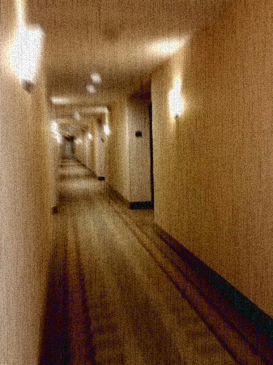

|  |
|---|
| A hallway of RSE-045, close to the elevator. |
RSE-045 is a structural anomaly located in a Holiday Inn hotel located in central Colorado. The hotel is 100% normal and functions as usual with patrons regularly booking stays. However, the anomalous properties begin when you step into one of the elevators. There is around a 1 in 250 chance that whenever the elevator doors open on the ground floor with no previous passengers in it, a button with the number 0 on it will appear under the first floor button. Most day to day passengers ignore this button, instead going to their desired floor. Some curious people, however, will press this strange 0 button. The elevator will move downwards, which should be impossible as there is no basement floor to the structure, and when the doors open, what appears past the doors is a standard hotel hallway. However the rooms begin with 0 instead of 1, 2, 3, or any other floor, and sometimes do not end with real numbers, instead ending in letters from the Latin and Greek alphabets, symbols, or even rarely, a blank space. Upon turning the corner at the end of the hallway, another like it appears, however at the end of this hallway a fork appears. This will in turn end up as a presumably never-ending maze. This maze has shown to be non-euclidean in nature, as certain hallways intersect with the locations where other hallways have shown to be. Due to its non-euclidean geography, it is very easy to get lost in RSE-045, although if you have an exceptional memory, you can trace your way back to the elevator as the pathways never change once you’re in the maze. Each time someone new ventures into the maze the pathways change around, even if someone else is already inside, although this change will not be apparent to those already inside RSE-045 until they attempt to retrace their steps and find that the path is different. There is always a solution to make it back to the elevator from any point in the maze, although extremely difficult.
The elevators themselves have been designated RSE-045-1 and RSE-045-2 as, while they are not particularly dangerous and show no anomalous effects most of the time, they are still the potential gateway to RSE-045. The strange button with the number 0 on it has been designated RSE-045-3, regardless of which elevator it appears in.
The Holiday Inn containing RSE-045 is not under heavy guard by RSE personnel as this would impact business heavily. However, a guard is to stand watch inside each of the elevators at all times to prevent RSE-045-3 from appearing. Experiments have shown that cameras pointed at the button panel do not stop RSE-045-3 from manifesting under the first floor button.